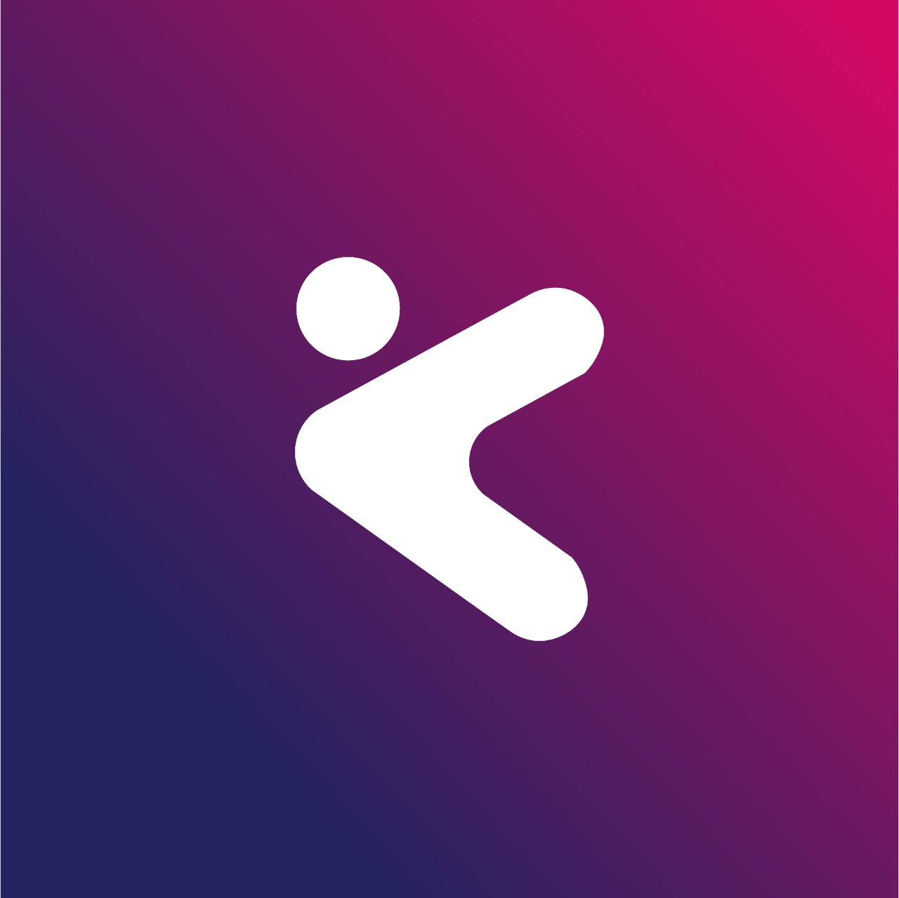

<ion-header class="ion-no-border">
    <ion-toolbar color="primary">
      <ion-buttons slot="start">
        <ion-menu-button></ion-menu-button>
      </ion-buttons>
      <ion-title>Início</ion-title>
    </ion-toolbar>
</ion-header>

<ion-content color="light">
  

  <div style="background-color: #0205A1;" class=" h-24 relative">
    
    <svg class="hero-waves" xmlns="http://www.w3.org/2000/svg" xmlns:xlink="http://www.w3.org/1999/xlink" viewBox="0 24 150 28 " preserveAspectRatio="none">
      <defs>
        <path id="wave-path" d="M-160 44c30 0 58-18 88-18s 58 18 88 18 58-18 88-18 58 18 88 18 v44h-352z">
      </path></defs>
      <g class="wave1">
        <use xlink:href="#wave-path" x="50" y="3" fill="rgba(244,245,248, .1)">
      </use></g>
      <g class="wave2">
        <use xlink:href="#wave-path" x="50" y="0" fill="rgba(244,245,248, .2)">
      </use></g>
      <g class="wave3">
        <use xlink:href="#wave-path" x="50" y="9" fill="#F4F5F8">
      </use></g>
    </svg>

    <ion-grid style="--ion-grid-padding: 0px;">
      <ion-row>
        
        <ion-col style="--ion-grid-column-padding: 0px; margin-top: 100px;" size="12">

          <ion-card mode="ios">
            <ion-card-content>
              <div class="text-center relative">
                
                <br>
                <ion-text color="dark" style="margin-top: 10px;">
                  <h1><strong>Bem-vindo ao Kampo APP</strong></h1>
                  <h2><strong>Navegue pelo menu lateral</strong></h2>
                </ion-text>

                <ion-icon name="arrow-back-outline" color="primary" class="mt-6 text-5xl"></ion-icon>
              </div>
            </ion-card-content>
          </ion-card>
        </ion-col>
      </ion-row>
    </ion-grid>
  </div>

  <ion-fab (click)="toExpenseCreate()" vertical="bottom" horizontal="end" slot="fixed">
    <ion-fab-button  color="secondary">
      <ion-icon name="add"></ion-icon>
    </ion-fab-button>
  </ion-fab>
  

</ion-content>